从古董藏品到当代创作，再到自有文创品牌，构建传统织绣的完整消费生态
 重点藏品
重点藏品
上海启文美术丝织厂织造，黑白像景织后再着色，以织物组织变化再现老树参天、湖光山色的宁静景致。
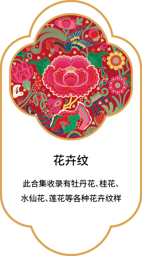
古董刺绣清中期缎地彩绣，以牡丹、蝴蝶为主题，寓意瓜蝶绵绵、富贵吉祥，绣工精细，保存完好。
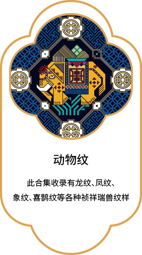
合作商携手北京、上海两地知名古董商，严选明清织绣珍品，来源清晰，品质保真。
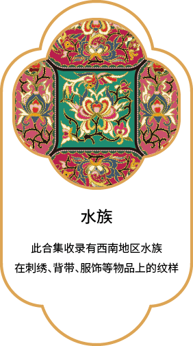
收藏级织物一寸缂丝一寸金，此扇套织工细腻，纹样清雅，为文人雅士之物，兼具收藏与赏玩价值。
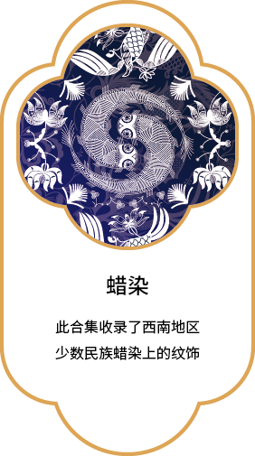
艺术家合作邀请当代艺术家以传统刺绣为媒介创作，让非遗技艺与当代设计语言产生对话。
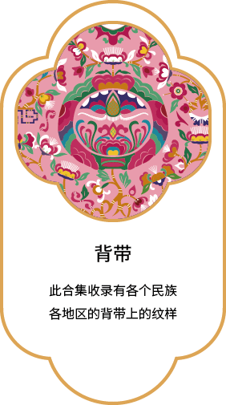
文化创作以苗绣、蜀绣等民族织绣为灵感，进行当代转化与再创作，传递文化记忆。
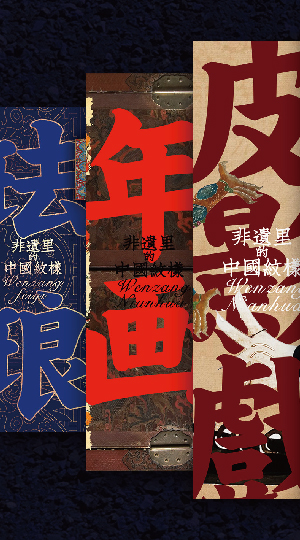
展览 / 活动配合主题展览推出的限定作品，每件均附带展览溯源与收藏证书。
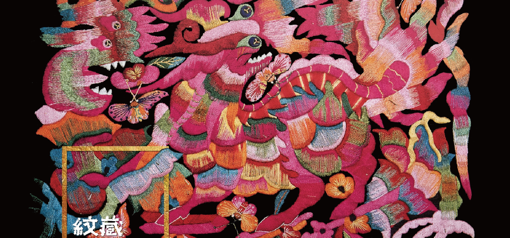
待设计自有品牌服饰线，供应链已就绪，待融入传统纹样与现代设计语言后上线。
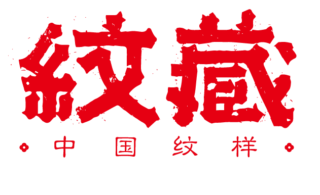
优先上线取品牌Logo「瓜蝶绵绵」意象，以传统打籽绣工艺制成，时尚百搭，优先上线。
参考中国丝绸博物馆藏品分类，按来源、类型、年代多维检索，溯源可考，分类可览
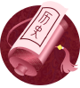
中国历代 · 织物 · 清代
来源：中国丝绸博物馆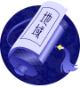
中国历代 · 织物 · 民国
来源：中国丝绸博物馆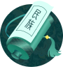
民族学 · 织物 · 清代
来源：中国丝绸博物馆中国历代 · 工艺品 · 明代
来源：中国丝绸博物馆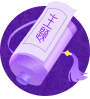
中国历代 · 工艺品 · 民国
来源：中国丝绸博物馆中国当代 · 面料 · 当代
来源：中国丝绸博物馆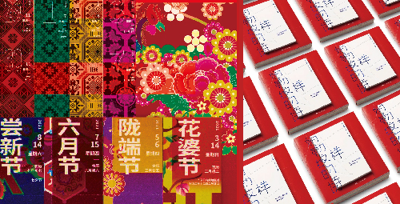
民族学 · 服装 · 明代
来源：中国丝绸博物馆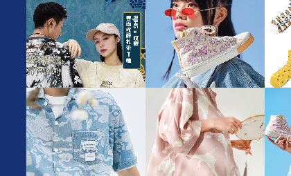
西方 · 织物 · 19世纪
来源：中国丝绸博物馆与国家级非遗传承人深度合作，让传统技艺经由大师之手走向当代生活
南京云锦研究所
从事云锦技艺传承四十余年，作品被多家国家级博物馆收藏，擅长龙纹、花卉题材织锦创作。
苏州刺绣研究所
精研细平绣、乱针绣等技法，作品多次获国家级工艺美术大奖，致力于苏绣年轻化表达。
黔东南刺绣工作室
深耕苗族传统刺绣纹样，将民族图腾与现代设计语言融合，推动苗绣走进国际舞台。
携手设计师品牌、潮牌与明星资源，让传统纹样成为当代时尚语言
以传统西湖纹样为灵感，共同开发新中式服饰系列，融合东方美学与国际剪裁。
联合发起国际纹样设计大赛，吸引全球设计师以中国传统纹样为源进行再创。
将织绣元素融入潮流单品，借助明星影响力推广中国传统手工艺文化。
线下展览、刺绣游学、大师工作坊，让传统织绣触手可及
参观东华大学纺织学院、中国丝绸博物馆，了解织绣历史与工艺，亲手体验基础刺绣技法。
特邀云锦大师现场演示织机操作，学员可亲手体验挑花结本，感受寸锦寸金的匠心。
精选明清织绣珍品与当代大师作品，围绕吉祥纹样主题，呈现织绣文化的传承与创新。
携手高校、博物馆、非遗机构与海外资源，共建织绣文化传承生态
纺织科学与工程学科支持，联合开展织绣技艺研究与人才培育。
核心纹样数据源，提供展览资源与学术支持。
国家级云锦大师资源对接，高端作品代售合作。
苏绣、苗绣、蜀绣等传统技艺工作室联盟。
国际纹样资源参考与文创定价策略研究合作。
公开藏品资源参考，推动中国织绣文化国际传播。
新中式品牌跨界合作与海外市场拓展资源。
请添加微信了解藏品详情、大师作品与活动报名

微信号：xusizhixiu